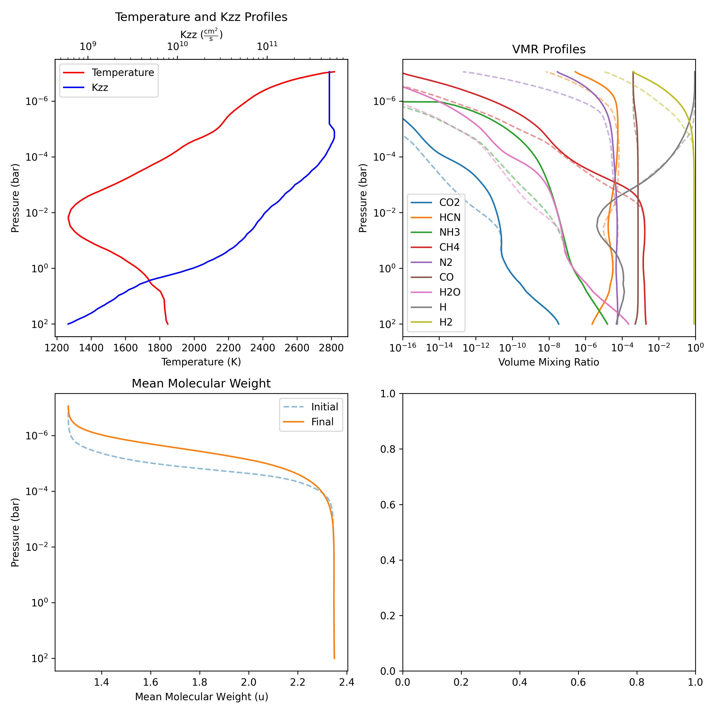
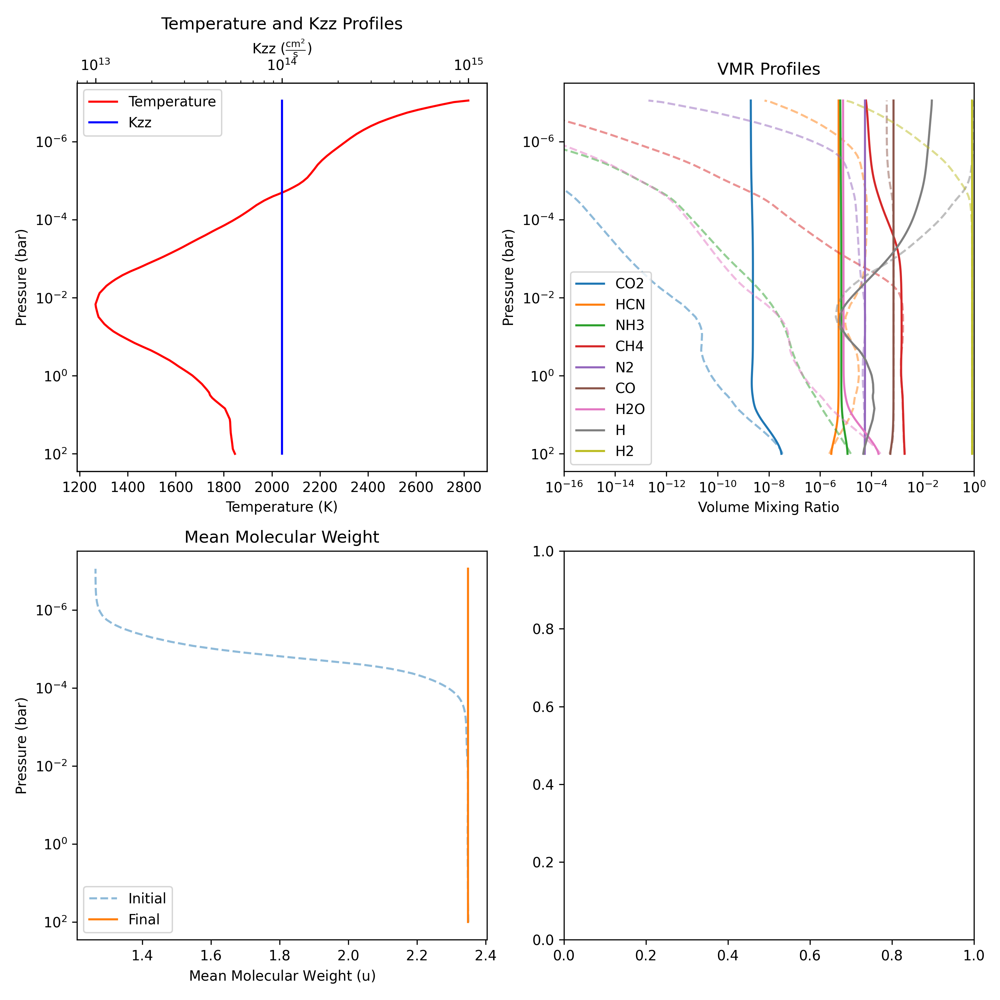
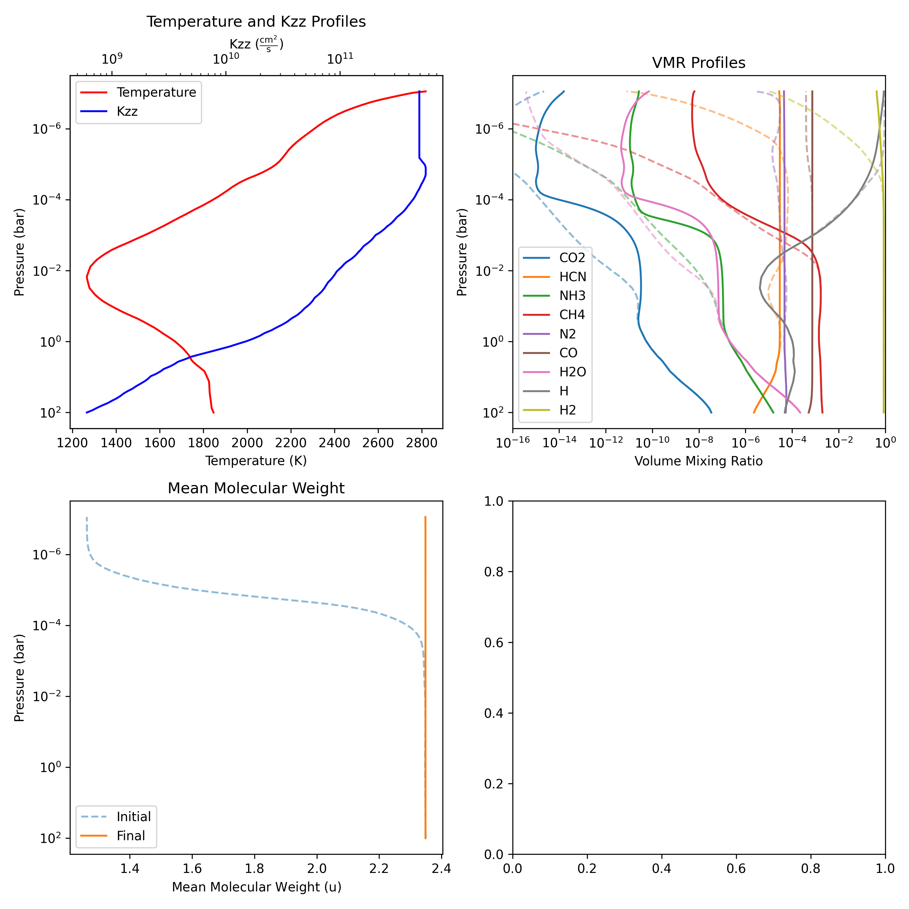
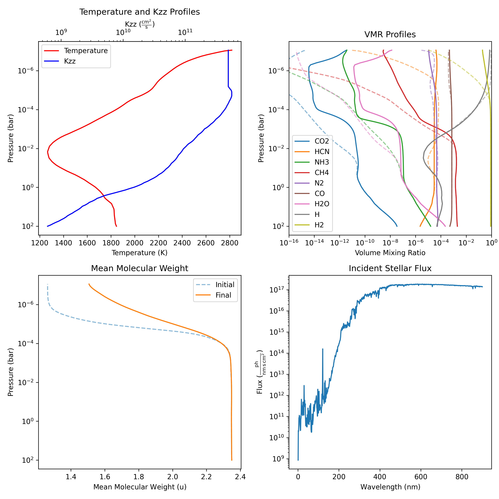
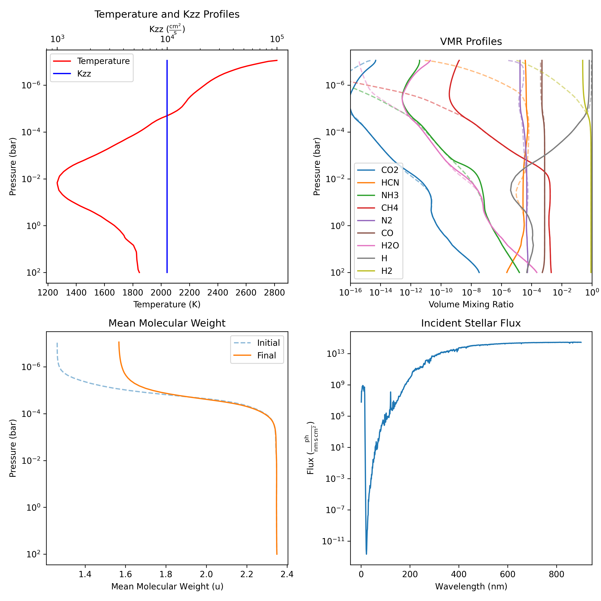

CLI Quickstart¶
This is a quick look at how to use the command line program (CLI). For more detailed information, please refer to the CLI and Input File documentation.
Lets first look at the command line options. You can see them by running:
This will show you the available options and their descriptions. The most important options are -o or --output which describe where to store the results in HDF5 format.
Running your first input file¶
Lets run a reduced chemical scheme. First we can find some inputs under the examples/input directory. Lets first cd into the directory:
Now we will run a reduced chemical scheme. Lets run hd209458_reduced.yml, we will store the results in hd209458_reduced.h5. The command is:
Hopefully this should complete within a few seconds! If we check the directory, we should see the output file:
If you want to see the results using Python you can refer to the Storing and Reading Results documentation, however we
can also ask freckll to generate a plot for us when we run the command. This is done using the --plot option. Since we plan to run other networks, we can add a prefix to our plots by using the --plot-prefix option. This will add the prefix to the plot name. The command is:
(Note: We need to use the --overwrite command to force FRECKLL to overwrite your previous result file, you can omit it if the result file has been deleted.)
This will generate the same result file hd209458_reduced.h5 as well as plot labelled reduced_solution.png:

This is a quick overview of the system, with the top-left representing your \(T\)-\(P\) and \(K_{zz}\) profiles, top-right representing the initial and final abundances of the species, the bottom-left representing the initial and final mean molecular weight (\(\mu\)) and bottom-right representing the actinic flux used (if photochemistry is enabled). We can also go one step further and generate an animation of the results evolving over time. This is done using the --animate option. The command is:
$ freckll hd209458_reduced.yml -o hd209458_reduced.h5 --plot --plot-prefix reduced --animate --overwrite
This will generate the same result file hd209458_reduced.h5 as well as video labelled reduced_animation.mp4:
Finishing the solve.¶
You may have noticed that the simulation never quite reached steady state. Lets fix that by increasing the time span from \(10^{4}\) to something like \(10^{11}\) to give the system more time to evolve. We can do this by editing the input file hd209458_reduced.yml. The relevant section is:
We can change the t_span to [0.0, 1e11] and save the file. Now we can run the command again, this time changing the prefix to reduced_ss (Reduced Steady State). The command is:
$ freckll hd209458_reduced.yml -o hd209458_reduced.h5 --plot --plot-prefix reduced_ss --animate --overwrite
This will generate the same result file hd209458_reduced.h5 as well as plots and video labelled reduced_ss_animation.mp4:
Nice! We can see we have reached steady state. However we never reached \(10^{11}\). This is because FRECKLL uses two other criteria to determine steady state.:
and
Where \(\delta X\) is the change in abundance between timsteps, \(\delta t\) is the change in time between timesteps and \(\epsilon\) is a user defined tolerances.
The default values are: \(\epsilon_x = 10^{-3}\) and \(\epsilon_t = 10^{-8}\). You can change these values in the input file under the solver section. The relevant section is:
If you want to evolve fully, you can set these to \(0\).
Changing the vertical mixing¶
Lets now modify the vertical mixing profile and see what happens. This is simply done by changing the \(K_{zz}\) profile in the input file. Lets work on the hd209458_reduced.yml file again. We can make a copy of the file and call it hd209458_reduced_high_kzz.yml. Now we can replace the profile with a new one. The relevant section is:
atmosphere:
tp_profile:
format: from-file
filename: tpprofile.csv
temperature_column: 1
pressure_column: 0
comments: "#"
temperature_unit: K
pressure_unit: mbar
kzz:
format: from-file
filename: kzz.csv
kzz_column: 1
pressure_column: 0
comments: "#"
kzz_unit: cm2/s
pressure_unit: mbar
We can replace kzz with just a constant instead.
It is important to note that you must include the units in the input file. The units we've used here are cm\(^{2}\)/s. Now we can run the command again, this time changing the prefix to reduced_high_kzz. The command is:
$ freckll hd209458_reduced_high_kzz.yml -o hd209458_reduced_high_kzz.h5 --plot --plot-prefix reduced_high_kzz --animate
We should see the results in the output file hd209458_reduced_high_kzz.h5 as well as plots and video labelled reduced_high_kzz_solution.png and reduced_high_kzz_animation.mp4 respectively:

Here vertical mixing is much more dominant resulting in a much more constant profile. The video is shown below:
Try changing the value of \(K_{zz}\) to something small. Do you see the difference? How about \(K_{zz} = 0~\frac{cm}{s^2}\), what do you expect to see?
Running the full chemical scheme¶
Now we can go ahead and try to run the full chemical scheme! Lets make a copy of the hd209458_reduced.yml file and call it hd209458_full_scheme.yml. We can then change the network section to:
Additionally lets solve until \(10^{11}\) again. The relevant section is:
Notice the removal of reduced. This will run the full chemical scheme. We will use the original \(K_{zz}\) profile provided in the input file. The command is:
$ freckll hd209458_full_scheme.yml -o hd209458_full_scheme.h5 --plot --plot-prefix full_scheme --animate
Now it will take a bit longer to run as we are dealing with a factor of 5x more reactions and 2x more species. This will generate the result file hd209458_full_scheme.h5 as well as plots and video labelled full_scheme_solution.png and full_scheme_animation.mp4 respectively:

Nice! Its similar to the reduced with some difference in the upper atmosphere.
Adding photochemistry¶
Finally we can add in photochemistry. First we need to include some flux from the star. FRECKLL has many built in fluxes profiles for stars. We can add in some stellar flux by adding the following to the input file:
Where we have defined spectrum as one of the built in fluxes. Incident angle is the solar zenith angle. You can also define your own fluxes by using the from-file option.
Our stellar spectra is complete! Now we can add in the photochemistry. This is done by adding the following to the input file:
Where we have defined photochemistry as one of the built in photochemistry schemes.
After that we can run the command again, this time changing the prefix to full_scheme_photo. The command is:
$ freckll hd209458_full_scheme.yml -o hd209458_full_scheme_photo.h5 --plot --plot-prefix full_scheme_photo --animate
Running this will take a bit more time as we now have the influence of photochemistry on the ODE.
This will generate the result file hd209458_full_scheme_photo.h5 as well as plots and video labelled full_scheme_photo_solution.png and full_scheme_photo_animation.mp4 respectively. LEts take a look at the plot output:

You may have noticed that we now have the lower right plot showing the actinic flux. This is the flux that is incident on the planet.
Finally lets take a look at the video output:
This is the final result! We can see that the photochemistry has a large effect on the upper atmosphere. The lower atmosphere is not affected as much.
Custom system¶
We've done a a lot of work so far so lets take a theoretical planet and star and see what it would look like!
Planet¶
Lets define a planet with the following parameters:
- Mass: 20.0 \(M_{e}\)
- Radius: 20.0 \(R_{e}\)
- Semi-major axis: 1.0 AU
We can define it in the input file as follows:
For the star, lets assume we have a sun-like star with the following parameters:
- Radius: 2.2 \(R_{\odot}\)
- Temperature: 4000 K
Again these are arbitrary values. We can actually make use of the built-in spectra to generate a new spectra using the rescale options. This is how we would define it:
star:
incident_angle: 45 deg
spectrum:
format: rescale
from_star: sun
temperature: 4000 K
radius: 2.2 Rsun
Finally let us use the same temperature-pressure profile as before. We can use the same tpprofile.csv file as before but we will lower \(K_{zz}\) to \(10^{4}~\frac{cm}{s^2}\). We can define it in the input file as follows:
atmosphere:
tp_profile:
format: from-file
filename: tpprofile.csv
temperature_column: 1
pressure_column: 0
comments: "#"
temperature_unit: K
pressure_unit: mbar
kzz: 1e4 cm2/s
We can then run the command. Assuming we save this as custom.yml we can run the command:
This will generate the result file custom.h5 as well as plots and video labelled custom_solution.png and custom_animation.mp4 respectively.

Conclusion¶
This is a quick overview of how to use the command line program. We have seen how to run a reduced chemical scheme, a full chemical scheme and add in photochemistry. We have also seen how to modify the input file to change the parameters of the system. Finally we have seen how to generate plots and videos of the results. If you need more details refer to the CLI and Input File documentation. If you have any issues, please feel free to open an issue on the GitHub repository.